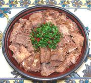

|
Fish with Walnut SauceGeorgia - Tevzi Brotseulis Tsvenshi | ||||
| Serves: Effort: Sched: DoAhead: |
6 app *** 1-1/4 hrs Best |
This is an excellent cold appetizer that will delight people who like fish. The sauce provides a savory flavor that many will find hard to identify. | |||
|
1-1/2 a/r a/r a/r a/r ------- 11 1 1/4 ------- 1/2 1 1/2 1 1/2 1/2 1/2 ------ |
# --- oz T t --- c cl T c c T --- |
Fish Fillets (1) Salt Pepper Flour Oil ----------- Onions Olive Oil ExtV Salt -- Sauce Walnut Meats Garlic Salt Chili, fresh (2) Water Pomegranate Juice (3) Tomato Paste --------- |
Strength of fish flavor will depend on the fish you use, but for a cold dish it shouldn't be too mild. This recipe can be made a couple of days ahead and refrigerated. Prep - (15 min (exclusive of filleting fish))
|
taf_fshwal1 160206 gf114 - www.clovegarden.com
©Andrew Grygus - agryg@aaxnet.com - Linking to and
non-commercial use of this page is permitted.